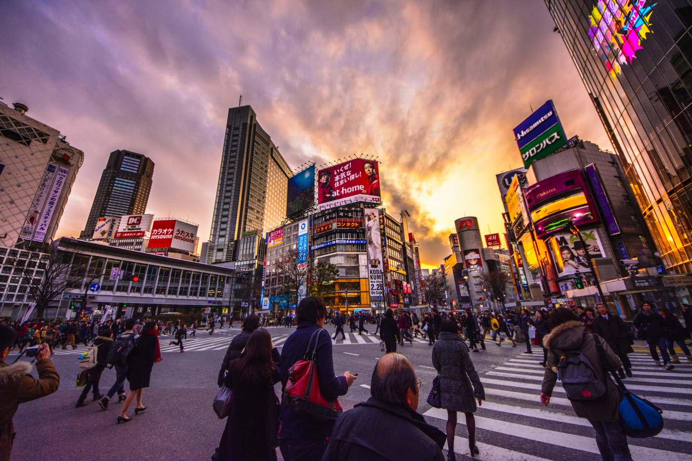

Shibuya Jepang

Siapa yang tidak mengenal Shibuya Crossing, salah satu persimpangan jalan paling terkenal di dunia yang berada di Tokyo, Jepang. Tempat ini menjadi salah satu ikon kota Tokyo yang selalu ramai dikunjungi wisatawan dari berbagai negara. Jika kamu berkunjung ke Tokyo, tempat ini wajib masuk ke dalam daftar destinasi yang harus kamu lihat.
Shibuya Crossing dikenal sebagai persimpangan pejalan kaki paling sibuk di dunia. Saat lampu lalu lintas berubah menjadi hijau, ribuan orang dapat menyeberang dari berbagai arah secara bersamaan sehingga menciptakan pemandangan yang sangat unik dan menarik. Dalam satu kali lampu hijau, bahkan bisa ada hingga sekitar 3.000 orang menyeberang sekaligus.
Di sekitar persimpangan ini terdapat berbagai gedung dengan layar LED besar, pusat perbelanjaan, restoran, dan kafe yang membuat kawasan Shibuya terlihat sangat modern dan penuh dengan cahaya neon, terutama pada malam hari. Tempat ini juga sering muncul dalam berbagai film, iklan, dan acara televisi sehingga semakin terkenal di seluruh dunia.
Selain itu, di dekat persimpangan ini juga terdapat Patung Hachiko, yaitu patung anjing setia yang menjadi salah satu tempat bertemu paling terkenal di Tokyo. Banyak wisatawan yang datang untuk berfoto di area ini sebelum menyeberang di Shibuya Crossin
Fasilitas yang disediakan :
- Area belanja dan pusat perbelanjaan
- Restoran dan kafe
- Layar LED dan billboard besar
- Spot foto wisata
- Akses langsung ke stasiun kereta
- Dek observasi untuk melihat Shibuya dari atas
- Transportasi umum (bus dan kereta)
- Area hiburan dan pusat budaya